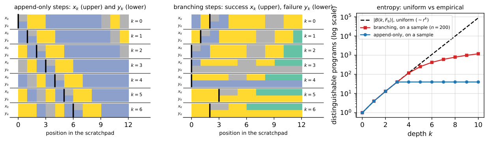

All theorems on depth-dependent generalization bounds are formalized and machine-checked in Lean 4, with a public repository and blueprint.
Abstract
We ask when adding hidden layers improves generalization, in a model that keeps the layers fixed and varies only their number. A hidden layer is a self-map of a state space, a depth-$k$ network composes at most $k$ hidden layers with an output layer, and depth is compared within the nested family $H_0\subset H_1\subset\cdots$ built from one class $F$ of hidden layers; this compares a deep network with shallower networks built from the same layers, not with wider ones. Our message is that the statistical cost of depth is the metric entropy of the set $B(k,F)$ of compositions. The estimation error is bounded by an entropy integral over $B(k,F)$ with constants that do not depend on the depth, and the bound is matched from below when the output layer can see the hidden states. For Lipschitz layers on a bounded state space this entropy grows at most polynomially in $k$, and it stays bounded, or grows only like $\log k$, under contraction, equicontinuity, or nilpotent structure. Balanced against the approximation error, this gives depths $k^\ast(n)$ that grow with the sample size, and it separates the models whose estimation error is independent of the depth from those whose estimation error grows with it. Deep ReLU networks, unrolled solvers, and chain-of-thought computation are worked out; for the last two the number of steps is derived rather than assumed. All statements are machine-checked in Lean 4; the formalization and its blueprint are available at https://shosonoda.github.io/lean-deepgen/ .
Problem
The paper asks when adding hidden layers improves generalization. Depth is compared within a nested family of networks built by composing a fixed class of hidden-layer maps, rather than against wider networks.
Approach
Networks are modeled as state-transition systems: hidden layers are self-maps of a metric state space, and an output layer reads the final state. The estimation error is bounded by an entropy integral over the set B(k,F) of layer compositions, with depth-independent constants and a matching lower bound when the output layer can see hidden states. Covering-number growth is analyzed under Lipschitz, contraction, equicontinuity and nilpotent structure, then balanced against approximation error. All statements are formalized in Lean 4 with a blueprint.
Results
For Lipschitz layers, the entropy grows at most polynomially in k, and it stays bounded or grows like log k under contraction, equicontinuity or nilpotent structure. The resulting optimal depths k*(n) grow with the sample size. Deep ReLU networks, unrolled solvers and chain-of-thought are worked out, and for the latter two the number of steps is derived rather than assumed.

Figure 4: Chain-of-thought computation with r=3 symbols. Left and middle: scratchpads x_{k} (upper row of each pair) and y_{k} (lower row) of two inputs after k steps of one program, under append-only steps (left) and branching steps (middle); one colour per symbol, grey for padding, and a black bar at the first position where the two differ. Right: distinguishable programs of length at most k on